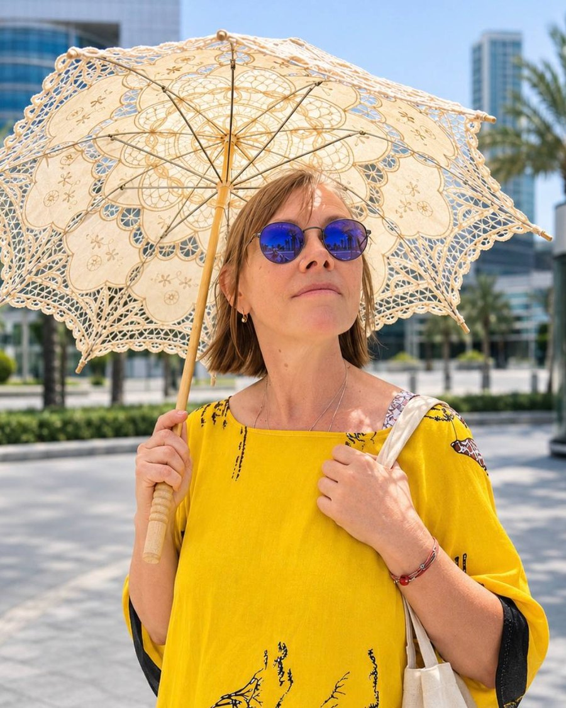

Виртуальная выставка
ЗНАКИ — виртуальная выставка Секции плаката Московского союза художников (МОСХ), куратор Юлия Назар
Знаки для того, у чего их пока нет
Выставочный проект художников Секции плаката РОО «Московский Союз художников»
Куратор — Юлия Назар
Мы решили создать знаки для того, у чего их пока нет.
Нас окружает огромное количество знаков. Они регулируют движение, предупреждают об опасности, обозначают запрет, принадлежность, направление.
Но значительная часть человеческого опыта до сих пор не имеет собственного обозначения.
Для чувства. Состояния. Отношения. Ситуации. Места. Нового явления. Личного или коллективного опыта.
Каждый художник сам выбирает, что именно хочет обозначить. Знаком может стать графический символ, изображение, цвет, форма, жест, слово, фотография или живописный образ.
Нам важно не столько создать универсальный символ, сколько зафиксировать сам жест называния: увидеть то, что обычно остаётся без обозначения, и дать ему визуальную форму.
Так появились знак немой глуши, знак того, что всё хорошо, знак пути в небо, знак единства, знак детей, бегущих от грозы.
Каждый художник представляет свой знак, его название и короткое пояснение: что он обозначает и почему понадобился собственный образ. Вместе эти работы складываются в единый визуальный словарь — систему обозначений, созданную не государством, не навигацией и не рекламой, а художниками.
Это словарь того, что мы замечаем, чувствуем и считаем важным обозначить сегодня.
Маршрут выставки
Три зала и спецпроект. Нажмите на зал, чтобы войти.
Выставка устроена как дорога, а залы — как типы дорожных знаков. Круг запрещает и предписывает, треугольник предупреждает, квадрат сообщает, ромб ведёт по главной дороге. Каждая форма задаёт свой угол зрения: внутрь человека, на мир вокруг, на время, в котором мы живём. Идите по порядку или начните с любого зала.
Экспозиция
- Зал I · 7 знаковВнутриЗнаки для того, что происходит в человеке: присутствие, озарение, связь, память.Знаки чувств и состоянийВойти в зал→
- Зал II · 6 знаковВокругЗнаки мест, где мир требует внимания: стихия, граница, дорога, скрытая сила.Знаки мест и ситуацийВойти в зал→
- Зал III · 11 знаковВремяЗнаки эпохи, у которой ещё нет словаря: технологии, медиа, страх, клеймо.Знаки новых явленийВойти в зал→
- Спецпроект · 11 знаковБухейпроектРомб — знак главной дороги. 11 знаков постероконцептуализма и путь «Выбора» длиной в сорок лет.Спецпроект БУ ХЕЕВЫХОткрыть спецпроект→

От куратора

Этот проект не предлагает готовой системы знаков. Напротив, он показывает, насколько по-разному художники могут обозначать одно и то же пространство человеческого опыта.
Здесь важен не только созданный образ, но и сам момент выбора: что сегодня кажется художнику настолько значимым, что для этого хочется придумать отдельный знак.
Поэтому «ЗНАКИ» можно рассматривать как коллективный портрет настоящего, собранный не из событий, а из того, что мы считаем необходимым заметить и назвать.
Юлия Назар, куратор
Секция плаката МСХ
1932Секция плаката Московского союза художников ведёт историю с 1932 года. Она выросла из Общества работников революционного плаката и вошла в Московский союз художников (в советские годы — МОСХ) как самостоятельная секция; её первым руководителем был Дмитрий Моор.
Сегодня в секции около 150 художников. Секция проводит выставки и конкурсы, участвует в культурных проектах, а её мастера преподают в художественных вузах и училищах. Председатель секции — Камиль Зайнетдинов.